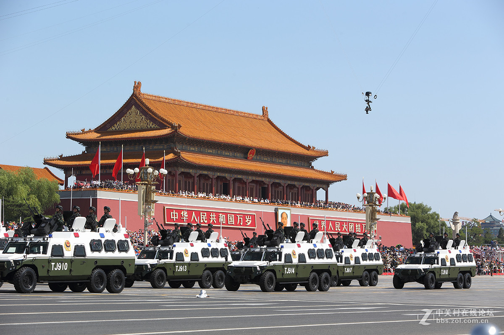

9月3日上午9点，为庆祝中国人民抗日战争暨世界反法西斯战争胜利 80 周年，在天安门广场将进行盛大的阅兵仪式，阅兵活动按照阅兵式、分列式两个步骤进行，时长约 70 分钟。其中，阅兵式环节，受阅部队在长安街列阵，接受中共中央总书记、国家主席、中央军委主席习近平的检阅。分列式环节，按空中护旗梯队、徒步方队、战旗方队、装备方队、空中梯队的顺序，依次通过天安门广场。
点击观看视频本次阅兵展示了多款新型武器装备，涵盖陆、海、空、天等全域作战体系，以下是核心装备概览。
中国战略威慑系统近年来通过技术升级和体系化建设，已形成涵盖核常兼备、全域覆盖的现代化威慑体系，其核心特征与最新进展如下:
东风-41洲际导弹射程突破14,000公里，可搭载10枚分导式核弹头，30分钟内覆盖全球目标，其公路机动发射单元已实现规模化部署。
东风-31AG实现寒区无依托发射，配合320座加固发射井的DF-31系列导弹，形成多层次打击能力。
094型核潜艇搭载的巨浪-3导弹射程达8,000公里，南海堡垒海域常态化战备值班，确保二次核反击可靠性。
轰-6N搭载的“惊雷-1”高超音速导弹（射程5,000公里+10马赫突防速度）成为全球首个空射高超音速核打击平台。
攻击-2无人机、无侦系列装备与网络信息体系深度融合，提升战场感知和精确打击能力。
低轨卫星组网、量子通信加密技术及反卫星系统（拦截成功率85%）构建全域监控与抗干扰体系。
火箭军实现“7分钟快速发射”纪录，东风-17高超音速导弹发射车伪装成民用车辆，红外特征降低97%。
机动发射井采用地下停车场伪装，配合AI动态迷彩涂层，显著提升隐蔽性。
中国核力量虽弹头数量约为美俄1/5，但三位一体完备性已跻身顶级阵营，技术代差（如高超音速武器）形成不对称优势。
美军反导系统在东风-41多弹头饱和攻击下防御缺口显著，中国战略威慑正重塑全球稳定框架。
这一体系通过技术突破与实战化演训，实现了从“区域威慑”向“全球制衡”的转型。
中国空军现役主战装备已形成以五代机为核心、多机型协同的现代化作战体系，其装备体系化水平和智能化程度均达到世界先进水平。以下是主要装备的详细解析：
作为中国首款五代机，歼-20采用整体钛合金框架和石墨烯吸波涂层，隐身性能优异（雷达反射面积仅0.01㎡），配备涡扇-15发动机实现1.5马赫超音速巡航，作战半径达5500公里。其氮化镓雷达探测距离400公里，可同时跟踪30个目标并引导6枚导弹攻击。2025年长春航展首次公开静态展示，现役数量已突破400架。
载弹量12吨的“炸弹卡车”，采用碳纤维复合材料减轻重量，可挂载鹰击-12反舰导弹（射程400公里）和PL-15空空导弹。电子战型歼-16D具备侦攻防一体化能力，可压制敌方防空体系。现役总数超400架，年产量约100架。
专为航母设计，最大起飞重量35吨，作战半径1300公里，配备氮化镓雷达和EOTS光电系统。双发设计可靠性优于F-35C，未来将换装涡扇-19发动机实现2.2马赫极速。
作为“空中指挥所”，可同时跟踪上百个目标，探测效能相当于20个地面雷达站，能引导歼-20等战机实施超视距作战。
2022年亮相的新型加油机，与歼-16编队展示空中加油能力，显著提升战机远程作战半径。
经现代化改造后，可携带鹰击-12B反舰导弹（射程500公里）和长剑-20巡航导弹（射程2500公里），具备远程精确打击能力。
采用乘波体设计，滑翔速度8.5马赫，射程1800-2500公里，可突破现有反导系统。其扁平弹头在末端机动时能实现CEP（圆概率误差）小于5米的精确打击。
中高空长航时察打一体无人机，可执行边境巡逻、反恐等任务，2024年黄海军演中曾配合歼-20S瘫痪敌方通信网络。
临近空间飞行器，速度超3马赫，可穿透敌方防空网实施战略侦察。
通过数据链系统实现战机、预警机、地面部队实时信息共享，形成“全图视野”。
歼-20双座版可指挥无人机群作战，攻击-11等隐形无人机与有人机协同形成“1+N”空战模式。
歼-20年产量达120架，列装速度远超F-35，东部战区已率先完成五代机换装。
当前中国空军装备已实现从“仿制追赶”到“自主引领”的跨越，构建起涵盖制空、对地、对海、电子战的全域作战能力。
陆军新质平台是当前军事变革中智能化、无人化作战力量的核心载体，其发展体现了从传统机械化向信息化、智能化转型的跨越。以下是关键特征与进展：
新型平台如100坦克、无人潜航器等，采用无人炮塔、有源相控阵雷达及GL6主动防御系统，实现“先敌发现、多元威胁应对”能力，显著提升隐蔽性和生存率。海陆空无人作战群通过联合编组，形成“侦打一体、扫排协同”的体系化作战模式，推动战斗力从“弹甲对抗”向“火信一体”跃升。
新质平台以数据为动力源，通过破击网链实现降维打击，例如美军陆军数据平台2.0版通过快速聚合、分析数据优化决策，类似技术已应用于我军新域新质力量的效能聚合。
深海、太空、电磁等新兴领域成为新质平台拓展方向，如军事航天部队与网络空间部队的组建，推动多维空间一体化作战能力。科技赋能下，人工智能、类脑技术等加速平台创新，形成“新质生产力→战斗力”的转化通道。
通过军地资源共享机制，突破技术壁垒；同时培养复合型人才，解决软硬件协同短板，确保平台自主适应与交互赋能能力。
在2025年九三阅兵中，三军无人作战平台首次大规模展示，包括无人僚机、无人潜航器等，验证了“无人有人协作、跨域联合打击”的实战能力，标志我军新质战斗力已进入体系化部署阶段。
无人作战系统是现代军事技术的重要发展方向，其核心特点是通过遥控或自主方式执行高危任务，显著降低人员伤亡风险。以下是其关键要素与发展现状：
包括无人机、无人车、无人艇、无人潜航器等物理载体，可执行侦察、打击、运输等任务。例如俄军“影子”系统通过外置天线实现500米至25公里的远程控制，已在实战中验证。
平台搭载的专用设备，如侦察摄像头、电子对抗装置或武器系统，决定任务类型。中国歼-20S双座战机可指挥无人机群完成“分布式猎杀”，通过数据链引导导弹实施精确打击。
作为系统“大脑”，负责任务规划、状态监控和协同作战，依赖无线自组网、卫星通信等技术实现节点互联。
空中以无人机为主，地面为无人战车/机器人，海上为无人艇/潜航器，太空包括军事卫星。
通过蜂群无人机、狼群无人艇等数量优势实现侦察、袭扰或饱和攻击。
如歼-20S与无人机组成战术群，有人机负责决策，无人机承担高风险任务。
适应极端环境（核辐射、生化污染），具备超长续航和实时态势感知能力。
小型巡飞弹（如“弹簧刀”）可单兵携带，改变传统攻防样式。
AI赋能自主决策，实现“发现即打击”的快速杀伤链闭合。
双方广泛使用自杀式无人艇（如乌克兰MaguraV5）和察打一体无人机，推动无人部队建制化。
美国“复制者”项目聚焦规模化无人系统，中国展示集群攻击型无人潜航器。
“欧洲卫士”项目计划2027年前完成水面无人平台原型试验。
自主决策可靠性、软件协同问题仍需突破。
联合国对致命性自主武器系统的应用存在限制性讨论。
未来，无人作战系统将向全域协同、智能自主方向发展，重塑战争形态。
中国已构建覆盖低空至太空的多层次防御网络，核心系统包括：
拦截速度达18-20马赫，采用动能碰撞技术（KKV），可在大气层外100-1000公里高度拦截洲际弹道导弹及高超音速武器，7次公开试验成功率100%。
全球首个覆盖全球的反导系统，整合天基、空基、海基和地面传感器，可实时追踪1000枚导弹，抗干扰能力强。
专为拦截高超音速武器设计，2024年成功摧毁500公里高空的侦查卫星，标志中国成为全球第三个具备反卫星能力的国家。
CNMD系统（中国国家导弹防御系统）与高超音速武器（如东风-17）形成“矛与盾”组合，确保二次核反击能力。
中段拦截成功率100%，天基红外卫星与3000公里探测雷达构成无死角预警网，成本效益优于美国“金穹”系统。
通过“天网”系统整合量子通信、太赫兹雷达，指挥决策周期缩短至分钟级。
萨德和爱国者-3对垂直灌顶目标拦截效率低，雷达仅120度覆盖，天基卫星追踪能力不足。
红旗-29拦截高度超美国GMD系统，分布式预警平台全球覆盖能力领先“金穹”计划。
中国防空反导体系已从“被动防御”转向“主动制敌”，技术成熟度与战略价值显著提升。
高原作战效能：解放军陆军第77集团军已在海拔4700米高原部署机械外骨骼，使士兵机动速度提升25%，持续作战时间延长40%，显著提升高负重环境下的作战能力。
协同作战：外骨骼与无人机、机器狗等装备协同执行卫勤救护任务，实现“人-机-无人平台”一体化作战。
全息战场感知：新型单兵综合作战系统集成北斗定位、微型无人机回传、红外夜视等多源信息，官兵可通过触控屏调取周边3公里范围内的敌我态势，夜间生物识别率超90%。
火力协同：单兵智能终端支持一键呼叫营属火力支援，与191火箭炮协同时，火力请求响应时间从15分钟缩短至47秒。
模块化设计：21式战术背心采用轻量化耐磨材质，兼容防弹插板、弹匣袋等模块，价格区间为790-266元（不同厂商配置差异）。
高原适应性：13式携行具配备75L防水背囊，内置U型铝合金支架，适用于高海拔机动。
俄罗斯经验借鉴：针对FPV自杀式无人机威胁，单兵需配备拾音降噪耳机（保护耳膜）、战术护目镜（防激光致盲）及护膝（防爆炸碎片）。
LG5狙击榴弹发射器：中国产单兵大杀器在也门山地战中表现优异，沙特联军使用其替代传统火炮，验证了游击战场景下的火力优势。
未来单兵系统将集成背包式制冷装置，维持72小时热平衡，并为夜视仪、通信设备等提供200瓦级电力支持。
全波段伪装技术（防可见光/红外/雷达探测）及拐弯射击能力（隐蔽瞄准）正在研发中。
中国单兵装备已从传统防护向“智能化、无人化、模块化”转型，高原与城市作战能力显著提升。
